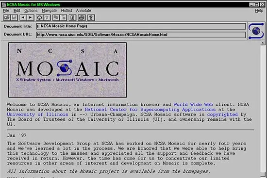

Historia de Internet - Línea del Tiempo
Desde ARPA hasta la era de la nube

Eventos Relacionados
| 1990 - Primer Navegador | 1995 - Internet Comercial | 1998 - Google | 2007 - Internet Móvil |
1993 – Navegador MosaicEn abril de 1993, el National Center for Supercomputing Applications (NCSA) de la Universidad de Illinois lanzó Mosaic, el primer navegador web verdaderamente popular y fácil de usar. Desarrollado por un equipo liderado por Marc Andreessen (entonces estudiante) y Eric Bina, Mosaic transformó la Web de una herramienta usada principalmente por académicos y científicos en un medio accesible para el público general. Lo que hizo a Mosaic revolucionario fue su interfaz gráfica intuitiva. A diferencia de navegadores anteriores que solo mostraban texto, Mosaic podía mostrar imágenes directamente integradas en las páginas web, no en ventanas separadas. Esta capacidad parece obvia hoy, pero en ese momento fue transformadora. De repente, la Web podía ser visualmente atractiva, con logos, fotografías, ilustraciones y diseños creativos. Esto abrió posibilidades completamente nuevas para el comercio, el entretenimiento y la expresión artística en línea. Marc Andreessen, el líder del equipo de Mosaic, posteriormente cofundó Netscape Communications en 1994. Netscape Navigator, basado en las ideas de Mosaic pero completamente reescrito, dominaría el mercado de navegadores en la segunda mitad de los años 90. Aunque Mosaic mismo fue eventualmente discontinuado, su legado perdura: prácticamente todos los navegadores modernos, desde Chrome hasta Safari, descienden conceptualmente de las innovaciones introducidas por Mosaic. Es ampliamente reconocido como la aplicación que "lanzó el Internet" al público general.  🔗 Fuente: ncsa.illinois.edu/mosaic |